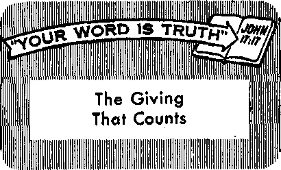
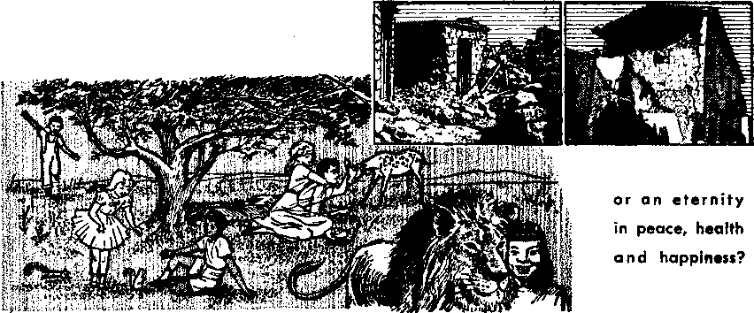

Peaceful Assembly in Troubled Africa
PAGE 12
Take a Chance?
PAGE 16
AUGUST 8. 1959
THE MISSION OF THIS JOURNAL
Newt source* that are able to keep you awake to the vital Ittuet of our timet must be unfettered by center*hip and selfish interest*. “Awake!" has no fetter*. It recognize* facts, facet facts, is free to publish facts. It is not bound by political ambition* or obligation*; it it unhampered by advertisers whose toes must not be trodden on; it is unprejudiced by traditional creed*. This journal keeps itself free that it may speak freely to you. But it does not abuse its freedom. It maintain* Integrity to truth.
“Awake!'' uses the regular news channels, but is not dependent on them. It* own correspondent* are on all continents, in scores of nations. From the four corners of the earth their uncensored, on-the-scenes reports come to you through these columns. This jour no J’s viewpoint is not narrow, but is international. It is read in many nations, in many languages, by persons of all ages. Through its pages many fields of knowledge pass in review—government, commerce, religion, history, geography, science, social conditions, natural wonders—why, its coverage is as broad as the earth and as high as the heavens.
“Awake!" pledges itself to righteous principles, to exposing hidden foes and subtle dangers, to championing freedom for all, to comforting mourners and strengthening those disheartened by the failures of a delinquent world, reflecting sure hope for the establishment of a righteous New World.
Get acquainted with "Awake!" Keep awake by reading "Awakef"
Published Simultaneously in the United States by the WATCHTOWER BIBLE AND TRACT SOCIETY OF NEW YORK, INC.
117 Adams Street Brooklyn 1, N. Y., u. S. A.
and in England bv WATCH TOWER BIBLE AND TRACT SOCIETY
Watch Tower House, The Ridgeway d N. H, Knorb, President
Printing thl* 2,860,000
“AWrtdP iff tft* fotawforf 19 Uatetfif:
MMlMWthfy—Afrikaans. DanUh, Duldi, English, Finn-tab, French, German, Gre«k, Italian, Japanese, Norweflan, PortufEKae, Spanish, Swedish, Tagalog.
Monthly—'Cinyanja. Indonesian, Ukrainian, Zulu
Yearly siibBCrifitlon rates
QfllMS for iwmtmonlhly edition*
AnrtHca. 1)4., 117 Adama St,, Brooklyn 1, N.Y (1 Antral la. 11 jpemford Rd., EtratMeJd, N.fl.W. 8/-
Cgnadh, 150 Brtdjeltnd Are., Toronto 19, Ont. $1 Enalaed* Watch Tower Hotjxo,
Th* BldWViy, London N.W. 7 ?/-
New Zlllaod, 821 How North Rd., Auckland. &W. 1 ?/-SMth Afrltt* Private Bag, Elandrfontrin, Tv). 7/-
Jfonthfy eertttanif djhC hair flze shore rata
London N.W» England Grant Suiter, Secretary „ 4d a copy
SemiftartMt for fttfwriptfros* be erent to tfie odJce In your country. Otherwise wnd your remittance to London. Not Ire of expiration Is sent at least two issues before subscription expires.
CHANGES OF ADDRESS ahaild reath m thirty dayi before your moriwj date. Give u« your old and new addms (if possible, ywr old addrm labolL Watch Tower, Watch Tower HolM. Th* Rldgawiy, London N.W, 7. England
Entered ae-necorwi-class matter at Brooklyn, N.Y. Printed In England
Tbv BIN* trtfHlatfaa md In “ Awake P |» the New World TranilatlOn of the Holy Stfiptiree. Whew other translations are med the follewlnt »mb»lt will appear behind the elUtloni:
AS -- American Standard Version AT - An American Translation AV - Authorised Version (1611i jjkz -■ J. N. Darby's veralon
— Catholic Douay version ED - The Emphatic DWott JP - Jewish Publication Roc, Le - Isaac Lee&eris version
jWq - James Moffatt's version
- J. B. Rotherham's version 2?j8 - Revised Standard Varaion Yg — Robert Youngs version
CONTENTS
Ib It Safe to Be Guided by Impulse? 3
What Requirements for the Ministry? 5 'The Worst Disaster in Uruguayan
A Peaceful Assembly in Troubled Africa 12
The Kangaroo—Broadjump Champion
"Your Word Is Truth” . The Giving That Counts Watching the World
WHEN a child feels the urge to do something he usually responds to the urge with no thought as to the consequences. When he feels the impulse to throw whatever is in his hand he does so without hesitation. He responds to the urge to mark up walls, strike another child or pull a kitten’s tail. By punishment and threats of punishment parents gradually teach a child that he must not obey every impulse. Discipline makes him realize that he must think of the consequences before he acts. As he learns to think before doing something, he becomes less a creature of impulse. He is on the way to maturity.
Some persons, however, grow to adulthood without fully overcoming childhood impulsiveness. They frequently do things without premeditation, only to regret their rash action later. This lack of self-control has been the cause of many broken marriages, shattered friendships and bloody fights. It is a sign of maturity when a person thinks before he acts. Instead of blindly responding to emotional impulses, he thinks about what may result from a certain action. If he sees that the result may be bad, he refrains from obeying the impulse. He refuses to be guided by it. He knows that foresight is much better than hindsight.
Many of the crimes that are reported in the daily newspaper would not have happened if the persons involved had refused to be guided by impulse. The fully mature person can see that nothing good can come from obeying the impulse to strike a person when angry. Violence is a childish way to settle an argument. The mature person maintains control of his emotions and refuses to obey an angry impulse fb strike an antagonist. The results of impulsive action at such a time could bring a mountain of trouble if the person struck should be injured or killed. Regrets will not change the results. The course of wisdom is to foresee the evil that may come from such action and avoid it by holding one’s peace. Regarding this the Bible wisely says: “The insight of a man certainly slows down his anger, and it is beauty on his part to pass over transgression.”—Prov. 19:11.
There are occasions when a person who successfully controls his impulses under normal conditions fails to do so when with a group of his companions. When a reveling group or crowd wander through a city it seldom has the spirit of restraint It responds easily to wrong impulses, which
can result in property damage or injury to others.
Uncontrolled inner urges can be very dangerous. They can cause a person to do strange things. One of a pair of holdup men who was arrested in New York city on April 5, 1959, said that he held up a store because “something inside me told me to do it." Another example is that of a high school student who felt a “compulsion” to choke a seven-year-old girl that was standing with him on the roof of a fourteen-story apartment house. He then threw her body over the side. These are only two of many cases in recent years in which individuals have committed crimes in obedience to an inner urge.
Other people may, at times, feel an inner urge toward self-destruction. When looking down from a height they feel the impulse to jump. They do not want to, but something seems to urge them. It requires concentrated effort for them to combat this wrong impulse. An appreciation for the right principles of God’s Word and a keen desire to obey him can help such persons greatly. Self-destruction is contrary to right principles and contrary to God's laws. Knowledge of this gives, them something strong to hold to, something to guide them when combating wrong impulses.
From where do such strange impulses come? Aside from explanations that psychologists plight give, it is possible that they come from wicked spirit forces that exercise a powerful influence over the sea of humanity. They are not interested in human welfare but are determined to corrupt and destroy mankind. Regarding them the Bible says: “We have a fight... against the world-rulers of this darkness, against the wicked spirit forces in the heavenly places."—Eph. 6:12.
Satan and his demon hosts are the invisible rulers of this world. For a number of years, now, they have been forced to confine their activities to the vicinity of the earth. The Bible foretold this when it said: "Woe for the earth and for the sea, because the Devil has come down to you, having great anger, knowing he has a short period of time.” (Rev. 12:12) These mighty creatures are capable of causing a person to feel an inner urge to do things that violate the righteous laws of God. The bad fruits produced by obedience to wrong impulses are the kind of fruits those creatures like to see.
It is necessary to build a shield of faith as a protection from the wicked, invisible rulers of this world. God’s written Word provides the necessary knowledge for that shield. When a person lets the Bible rather than impulse guide him he follows a safe course. "Your word is a lamp to my foot, and a light to my roadway.” (Ps. 119:105) Accurate knowledge of God’s Word, appreciation for godly principles and a determination to maintain integrity to the Creator help a person to walk as a wise man who exercises self-control at all times.
It is imperative for a person to depend upon his power of reason in connection with an accurate knowledge of God’s Word rather than upon impulse. This is so in matters of worship as well as everyday living. “I entreat you by the compassions of God, brothers, to present your bodies a sacrifice living, holy, acceptable to God, a sacred service with your power of reason."—Rom. 12:1.
It is folly for adults to act like children by allowing impulse rather than reason to guide them. It is a dangerous way to live. God’s Word with its good principles is the finest and safest guide a person could have. It is a spiritual anchor when an individual feels pushed by bad impulses. It leads in the way of peace, security, happiness and endless life.
trician, a painter, a plumber and a builder, along with a dozen other professions. But the apostle Paul in setting down the qualifications for ministerial overseers does not so burden the minister. Paul
'OVERY person professing to be a Chris-ill tian should consider it his first obligation to be God’s minister of the gospel. If his Christianity is more than just being enrolled on a church register, and if he has really dedicated himself through Christ to God’s service, then there is no escaping it: he must now carry out his ordination to preach God’s message.
What is he required to have to minister? Martin Luther listed ten qualifications for the minister. He said that one should be able to teach plainly and in order; that he should have a good head on his shoulders, good power of language, a good voice, a good memory, and he should know when to stop. The other qualifications are, according to Luther, that one should be sure of what he means to say and be ready to stake his life, goods and reputation on its truth. He should study diligently, and suffer himself to be vexed and criticized by everyone.
There are others who, by a kind of perverse compliment, expect the minister to have the sermonic skill of Paul the apostle, the personal charm of Absalom, the organizing and administrative ability of Jacob’s son Joseph, the wisdom of Solomon, the meekness of Moses, the patience of Job and the love of Jesus Christ. In addition, they expect the minister to be an adviser, a counselor, a director, a physician, a psychologist, a lawyer, a mechanic, an elecsimply says: “What is looked for in stewards is for a man to be found faithful.” —1 Cor. 4:2.
Of course, there are other Scriptural qualifications, but these qualifications should be the standard of decent, Godfearing people everywhere. For example, Paul says: “The overseer should therefore be irreprehensible, a husband of one wife, moderate in habits, sound in mind, orderly, a lover of strangers, qualified to teach, not a drunken brawler, not a smiter, but reasonable, not belligerent, not a lover of money, a man presiding over his own household in a right manner, having children in subjection with all seriousness; (if indeed any man does not know how to preside over his own household, how will he take care of God’s congregation?) not a newly converted man, for fear that he might get puffed up with pride and fall into the judgment passed upon the Devil. Moreover, he should also have a favorable testimony from people on the outside, in order that he might not fall into reproach and a snare of the Devil.” These requirements are not too high. For the most part, they are qualities that we look for in decent people. This we should all be.—1 Tim. 3:1-7; Titus 1:5-9; 1 Pet. 5:1-10.
What about a minister’s education? Is he required to have a college education and complete a course in a theological seminary and have an ecclesiastical title of “reverend,” “parson,” “doctor of divinity,” or the like? No, if such were needed to (gualify, then neither Jesus nor the majority of his apostles would have qualified. Of Jesus it was asked; “How does this man have a knowledge of letters, when he has not studied at the schools?” Peter and John were referred to as “men unfettered and ordinary.” Pau! said: “Do we, perhaps, Hke some men, need letters of recommendation to you or from you? You yourselves are our letter, inscribed on our hearts and known and being read by all mankind. For you are shown to be a letter of Christ written by us as ministers, inscribed not with ink but with spirit of the living God, not on stone tablets, but on fleshly tablets, on hearts.”—John 7:15; Acts 4:13; 2 Cor. 3:1-3.
Ministers work with the written Word of God, which contains His good news or gospel. Hence the apostle Paul spoke of himself as “engaging in the holy work of the good news of God.” So, prove that you are a minister of the gospel by your knowledge, works and adherence to God's Word. —Rom. 15:16.
Should not ministers wear a garb that distinguishes them from others? Once former president of the United States Woodrow Wilson was asked whether a minister should wear clerical or ordinary dress. He replied: "It makes no difference what the minister wears. But one thing matters supremely. He should never be in any company of men for a single instant without making them realize that they are in the presence of a minister of religion." Neither Jesus nor his disciples distinguished themselves by what they wore. It is what they said and the way they lived that identified them as Christian ministers.
What everyone must have to be a complete and qualified minister is the Scriptures and an understanding of them. Paul wrote to Timothy: “You have known the holy writings which are able to make you wise for salvation through the faith in connection with Christ Jesus. All Scripture is inspired of God and beneficial for teaching, tyr reproving, for setting theags straight, for disciplining in righteousness, that the man of God may be fully competent, completely equipped for every good work.” Certainly to help others to become wise to salvation we ourselves must study the Holy Scriptures and know and understand them in order to impart the meaning of them to others.—2 Tim. 3:15-17.
God has not made ignorance the Way to salvation, and does not sanctify us by ignorance. “Sanctify them by means erf the truth; your word Is truth,” Jesus said. Hence we must study the Scriptures with the help of all that God provides through his theocratic organization to aid our understanding. Of the happy man it is Written in the Psalm: “His delight is to the law of Jehovah, and in his law he reads in an undertone day and night.” Our study and meditation are not merely to gain our own salvation, but also to be teachers of others, that they too may win salvation. After a time of such study and meditation God expects us to be teachers and ministers of the good news about the Christ. —John 17:17; Ps.l:2.
Said Paul to the Hebrew Christians: “For, indeed, although you ought to be teachers in view of the time, you again need someone to teach you from the beginning the first principles of the sacred pronouncements of God." His expression of disappointment shows that all Christians are expected to develop into teachers of others. The Scriptures show that the organization of Jehovah’s witnesses is a society of ministers that teaches others to be His ministers of the gospel. Only his ministers, may have any hope of surviving God's war of Armageddon.—Heb. 5:12; Rev. 16:16.
At this time what we should study to teach others is the increased knowledge that the prophet Daniel said would mark the time of the end. That knowledge means the present-day facts about God’s kingdom now established, the approaching day of His vengeance at the universal war of Armageddon, and the thousand-year reign of Christ that is to follow for the blessing of all persons of good will.—Dan. 12:4, AS.
One of our main objectives is to teach others. As Paul told Timothy: "The things you heard from me with the support of many witnesses, these things commit to faithful men who in turn will be adequately qualified to teach others.” But, now, our teaching others is not merely to have others succeed us as teachers and preachers after our death. It is to help others become God’sministersnow, thattheymay by God’s undeserved kindness live through this “time of the end,” survive the destruction of this world at Armageddon and keep on ministering to God forever in the righteous new world to follow, without a break in their ministry.—2 Tim. 2:2.
Not in Own Strength
"But I could never preach from house to house,” someone says. "I could never undertake such service.” No, not of your own natural ability or in your own strength. But with the divine help and gift you can, if you do not hold back fearfully but respond willingly. As Peter said: “In proportion as each one has received a gift, use it in ministering to one another as the right kind of stewards over God’s undeserved kindness which is expressed in various ways. If anyone speaks, let him speak as it were the sacred pronouncements of God; if anyone ministers, let him minister as dependent on the strength which God supplies; so that in all things God may be glorified through Jesus Christ” God can develop the gift of the ministry in us, and he will supply the strength and ability needed that we may render the required service. This new strength and ability he imparts by means of his spirit or invisible active force upon us.—1 Pet. 4:10,11.
The invitation now goes forth to all seekers of life in the new world to take up the gospel ministry, that they may gain life eternal in that glorious world. Now the scripture applies: "And the spirit and the bride keep on saying, ‘Come!’ And let anyone hearing say, ‘Come!’ And let anyone thirsting come; let anyone that wishes take life’s water free.” By the word "spirit” here we need not understand any person, either God or Christ Jesus, but simply the active force of God inspiring expression, in the prophecies. Hence ministers of God as members of the spiritual Bride class extend the invitation to all nations to come to the Kingdom water of life. To those of good will who answer the invitation to the water of life and dedicate themselves to do God’s will a share in this precious gospel ministry is assigned in the words: “And let anyone hearing say, ‘Cornel’ ” And as the good-will persons obediently enter this gospel ministry, God imparts his spirit to them to give them strength and ability as his gospel ministers. By persisting in this blessed ministry till the complete end comes upon the world, they share with Christ Jesus in vindicating Jehovah’s name and'word. For their share in this vindication all these faithful ministers gain the gift of everlasting life in the new world of God’s making.—Rev. 22:17.
We are not peddlers of the word of God, as many men are, but as out of sincerity, yes, as sent from God, under God’s view, . . . we are speaking—2 Cor. 2:17,
IN URUGUAYAN HISTORY ... ly •‘Awok*l" <orr*,pond«fll In Uruguay
i trp HE Worst Disaster in the History
I of Uruguay.’* “Uruguayan Tragedy Costs Millions,” ‘‘Years Required to Fully Reconstruct the Nation.” These were only a few of the startling headlines that held the public eye during April. All other world news faded into the background as the worst deluge in Uruguay’s history literally flooded its way into the limelight
April is usually a pleasant autumn month in Uruguay, with rainfall of about three inches, but April of 1959 was not. During the entire month Uruguay, parts of Argentina and southern Brazil were drenched day and night with more than twenty inches of rain.
Normally dry ravines and creek beds became raging, roaring rivers overflowing their banks and leaving behind a muddy trail of death and destruction. Being low, level country, Uruguay does not drain rapidly and great areas quickly became submerged by the rising waters. Communications were disrupted. Bridges were washed out. Telegraph and telephone lines were damaged by the heavy rains and winds of fifty to eighty miles an hour. As expected by most people, these forces of
nature even turned a deaf ear to special religious prayers, and pious processions led by chanting, cross-bearing Catholic priests through the streets of flooded areas in a jr vain attempt to force the rising
tides to retreat. Practically all cities and towns became completely isolated.
Amateur radio operators offered their services in the emergency and were at times the only means of communication with the stricken areas. They supplied valuable information on damages and directed plans for rescue work and aid to the flood victims.
Continued high winds and heavy rains made flying impossible and landing strips were either flooded or otherwise unfit for use in getting needed supplies to the inundated areas by plane. Nevertheless, practically all army, commercial and private planes in the country were loaded with clothing, foodstuffs and medicine, ready for the take-off at the first sign of a break in the weather.
The death toll is not yet known, but damages run into the millions of dollars. Thousands of prize beef cattle and thousands more of Uruguay’s best woolproducing sheep were whisked away to their watery graves. Thousands of acres of rice, corn, beets, potatoes and other staple crops were total losses. In one warehouse alone over 11,000 tons of wheat was destroyed by floodwaters. Thus, with present food supplies very limited, and a good portion destroyed, and the new crops almost completely ruined, it does not appear that the immediate future will be very prosperous for Uruguayans.
New Records Set by Floodwaters
Some 40,000 to 50,000 persons fled from their homes and sought security on higher ground, some with relatives and friends, but most of the unfortunate ones had to be provided with temporary quarters in schools, warehouses, barracks or buildings of any kind.
New records for floodwaters were being made in all parts of the country. At Salto the Uruguay River rose more than fifty-five feet above normal. Of greatest concern to everybody was the Rio Negro (or, Black River) passing through the center of the country, where one of the largest hydroelectric plants of South America provides power to most of the nation's homes and industries. According to official estimates, some nineteen billion tons of water fell into the Rio Negro basin in just twenty days, causing the sixty-mile-long artificial lake to rise rapidly and overflow in all directions. More than twenty cubic kilometers of water (about five cubic miles) kept pushing against the 120-foot-high, three-fourths-mile-long dam. The dam was in serious danger. It could give way any moment. It seemed that the turbinegenerating equipment and thousands of inhabitants living in cities and towns below the dam would be swept into oblivion should the dam crack and release this tremendous volume of water. Indeed, all eyes were focused on the flood level of this dam, Rincdn del Bonete; especially those of some 10,000 residents of the city of Paso de los Toros, situated just eight miles below the dam.
Total Evacuation as Told by Refugees
The entire population of the city of Paso de los Toros had to be evacuated in one night. From the lips of one who was forced to abandon his home and flee in the night comes an exciting and dramatic account, as related to me:
“With the continual torrential downpours the whole population of the city anxiously watched the lake’s water level. The water was already high due to the heavy summer rains. It just would not stop rising. To alleviate the enormous pressure on the dam and slow down the rise of waters, all floodgates were fully opened and the turbine tunnels released all they could. This caused the lower parts of our city to be flooded, and many people were forced to move to higher ground. But the lake kept rising. Our anxiety turned into frightening alarm when the lake reached the maximum security level, and the rain kept coming.
"Hundreds of jittery citizens felt that it was high time to move out, so many trucks and wagons loaded with furniture were seen leaving the city. April 18 was a ‘D-Day’ (at first, Decision Day; later to become Departure Day) for all of us in Paso de los Toros. A crew passed through the city prepared to dynamite a section of the earth embankment near the dam to try to save the structure and the turbine generating equipment. This was a hard decision to make, since it would release enough water to do millions of dollars’ worth of damage to the equipment and materials of another hydroelectric generating plant being constructed at Baygor-ria, some thirty miles below Rincon del Bonete. The authorities had decided on total evacuation of the city, and by means of a sound car hurrying through the streets they gave orders for everyone to leave the city immediately. Many salvaged what they could of their possessions and fled on foot, bicycle, truck, horse, bus or train. Everybody literally ran for their lives, and got away with just what they had on or could carry in their hands. Trains were already provided by the government and were waiting at the station to evacuate those who did not have other transportation. Thousands of people crowded the station platform carrying bundles, bags, boxes, suitcases and children.
“Only one thing was on our minds—to get away from there! In general, ah were grim and serious, since we had to abandon our homes and belongings to an unknown destiny. We all wondered if we would be able to return home. I left my home and furniture intact that evening, but what will I find when I return home? A house? or just a broken foundation and debris? There was no panic or disorder, as all of us knew there was no alternative but to leave. Many of our grieved companions shed bitter tears, while others just sat stunned and silently stared into space. All of us felt sure that a break in the dam above us would completely annihilate the entire city. Some of the refugees recalled the Bible sermons about the ‘end of the world’ that Jehovah’s witnesses had presented to them at their doors and asked if this present disaster had some connection with those Bible prophecies.
“At one o’clock in the morning of April 18, one trainload of refugees chugged northward toward Chamberlain. The normal population of 250 suddenly swelled to 3,800 inhabitants, we learned later, as refugees made temporary living quarters in tents, railroad cars and other improvised shelters. Women, children and sick persons were taken first, and if there remained space, the men could also board the trains. We waited until 5 a.m. and got on a train headed south. Employees of the railroad, police, telegraph and electric plant had to remain behind at their posts after saying ‘farewell’ to their families. Many faces were wet with tears. That train ride was no joy ride; it was like a nightmare. The train made stops at various stations along the way and some refugees got off to stay with relatives. Of the 1,800 who left Paso de los Toros on our train, about a thousand arrived at Montevideo. The station was full of relatives, doctors and relief workers. They gave us coffee, and the children received warm milk. After caring for registration, the officials saw to it that we were taken to temporary homes in the city. They were doing an excellent job.
“On our arrival at the station in Montevideo, many charitable people eagerly waited to receive refugees in their homes, and there were not enough displaced persons to fill the rooms so generously offered by the hospitable and sympathetic folks of Montevideo.
“Some families were split, some going north and others getting on the southbound trains. However, the radio stations made their services available to help locate strayed and lost family members.
“My home town is now without an inhabitant and is completely isolated by the floodwaters. The newspapers refer to it as ‘The Ghost City of Uruguay.’ ”
Another flood victim told of the incredible speed with which the waters rose in the city of Tacuarembd. “At eight o’clock in the evening the waters were 150 feet from our house down a gradual slope,” he related. “I hurried off to find a truck to help us move out in case it should be necessary. When I returned home at 8:20, the water was already beginning to cross the sidewalk to enter my house. Seeing our plight, many willing townspeople gladly helped us and our neighbors carry out furniture and personal belongings to higher ground. By the time the last trip was made, we were wading in water knee-deep. A few hours later our house was sitting in over six feet of water. In the rush and confusion we did not know who was carrying what or where they were going with it, but a later inventory showed that not a single thing was missing or broken.”
The Waters Subside
Over a half ton of dynamite was used to open a 200-foot-wide breech in the earth embankment some one and a half miles north of the dam, but the lake still kept rising. This breech had to be widened. Finally, with turbine tunnels and floodgates fully opened, water flooding out over thousands of acres bordering the lake, and about two feet of water pouring over the breast of the three-fourths-mile-wide dam and hundreds of tons per second rushing through the dynamited opening, the rising of the waters in the lake reluctantly came to a halt.
Dangers Presented by the Floodwaters
New and unseen dangers lurked underneath the high floodwaters. The lives of many were threatened by fierce reptiles and other wild life commonly found in the marshes and subtropical areas to the north. These were forced to seek new quarters along with human victims.
Floodwaters backed up sewage and refuse into the streets and houses. Sanitation was almost impossible in these areas. There arose the fear of typhus and other dreaded plagues. Vaccines were immediately flown in to these parts, and strict measures were taken to prevent a plague.
Ironically, the superabundance of water created a scarcity of water. Reservoirs were simultaneously flooded and contaminated by river water. Purifying and pumping equipment was often damaged and put out of order. However, limited amounts of fresh water from other sources were distributed to the people in tank-trucks.
The Government Intercedes
This worst disaster in history created new fears in the minds of thousands who see a bleak future and scarcities ahead. They flocked to the stores to gobble up every bit of sugar, rice, flour, salt, fuel, etc., they could purchase. Supplies rapidly diminished, and it is already impossible to purchase many items. Racketeer storekeepers also saw their opportunity to “make a killing” by raising prices to the long lines of anxious buyers. Because of this crisis, the government met in emergency session to formulate measures to maintain order. Price controls were placed on basic foodstuffs, and penalties were severe for those who charged more. Those who hid their surpluses of supplies had their hoarded stocks confiscated. The government fixed the work hours for all businesses, offices, factories, so as to cut down on consumption of electricity in Montevideo. The current is being cut off every day for several hours.
Things are slowly getting back to normal again as the floodwaters are subsiding. Most of the refugees are making plans to return home. Fortunately, the dam did not break as feared, yet more than a thousand homes in Paso de los Toros were wholly or partially destroyed.
One of the six Watch Tower missionaries who were also evacuated from their homes with thousands of other flood victims told how many people felt that the flood was a punishment from God. He took great pleasure in explaining to them that these troubles all contribute to the visible sign showing that we are living dangerously close to the end of this wicked old world and the beginning of a new world of peace and happiness, where there will be no more tears in the eyes of refugees fleeing from death, and no more floods, plagues or loss of possessions. (Rev. 21:4) No, flood disasters will never mar the natural beauty of Jehovah’s new world.
THE year 1959 is proving to be a momentous one for the Federation of Rhodesia and Nyasaland in Central Africa. The exit of 1958 had been blighted by tribal riots in nearby Brazzaville, one-time capital of French Equatorial Africa and now capital of one of the newborn African republics emerging from this former French colony. Now 1959 had made its troubled entrance. In early January at Leopoldville, capital of the Belgian Congo, which adjoins the territory of the Central African Federation, violence reared its ugly head. In two days of rioting more than thirty-four died in that city, with many more seriously injured and much damage done to property. A state of siege was declared. Disturbing headlines appeared in the Federation’s newspapers: “Uneasiness Stalks in Riot-torn Capital.”
Then, less than two months later, the same story was being repeated, this time inside the Federation, where, on February 22, organized violence erupted in Nyasaland involving supporters of the African National Congress (an African political party). Quickly the trouble grew in intensity, reaching a peak on March 3, when the governor of Nyasaland declared a state of emergency. The Northern News of March 4 headlined: “26 Killed in Nyasa Riots.” This same paper reported a dawn swoop by security forces on leaders of the African Congress, now declared a prohibited organization in Nyasaland.
On Friday, March 12, trouble broke out in Lusaka, capital of Northern Rhodesia, where home-made “fire-bombs” (bottles filled with petrol) were thrown through some shopwindows, but no casualties were reported. March 18 The Northern News reported two Africans killed and two government officials injured in riots on Chilu-bi Island in Lake Bwangwelu in the Northern Province of Northern Rhodesia. In the meantime another political organization had been declared unlawful, this time in Northern Rhodesia, namely, the Zambia African National Congress, and a state of emergency had been declared in Southern Rhodesia.
Despite the tensions existing and the flow of extremist talk from various sides, new elections were held in Northern Rhodesia on March 20 without much incident. For the first time Africans were being elected, rather than appointed, to the Legislature by regular ballot at the polls. Meanwhile, though lessening somewhat in intensity, the situation continued to be tense in Nyasaland, and sporadic incidents in Northern Rhodesia showed that not all was as peaceful as could be wished for. Reports of arson, car stonlngs and attempted train derailments appeared in the press.
Photo by Tire Xtiirhein Ndola
It was amid such troubled conditions as these that the president of the Watch Tower Bible and Tract Society of Pennsylvania was due to pay a visit to the Central African Federation, a visit long looked forward to by the thousands of Jehovah’s witnesses living there, especially since his last visit had been as long ago as 1952. As far as Nyasaland was concerned, the emergency regulations made it impossible to hold an assembly; but in Southern and Northern Rhodesia the situation had eased sufficiently to allow assemblies to be held.
Preparations for the AMembly
The assembly in Northern Rhodesia was due to begin April 23, yet it was not until March 1 that it was possible to begin the preassembly work. A contract was entered into for the use of the Ndola Showgrounds. (Ndola is the administrative city for the Copperbelt area.) A police permit was then obtained. But between the making of the agreement to hire the Showgrounds, including the fenced-in Showgrounds proper as well as a substantial area of open space outside the Showgrounds, and the commencing of the actual work, the Government had called out the part-time Army Reserves and taken over the fenced-in Showgrounds area as a barracks. So on March 1 assembly prepa
rations commenced in the area surrounding the Showgrounds in which were encamped the Army units.
With less than seven weeks to go, there was much to be done. Thirty-five acres under bush and high grass (up to your eyes) had to be transformed into a compact assembly area sufficient to provide two assembly arenas seating a total of 25,000, a cafeteria, refreshment stands, administrative buildings and storage buildings, not to speak of an extensive sleeping camp for some 18,000 conventionersf A convention organization was soon geared for action, and some 350 to 400 volunteer workers began to appear regularly for weekend work. The transformation and the time in which it was accomplished spoke volumes about the unity and cooperation among those within the New World society of Jehovah's witnesses and proved to be a powerful witness to the residents of Ndola.
One major construction problem was how to provide seating for 25,000 people when there was evidently insufficient time to construct seats in the usual way, either from grass, reeds or wood. The problem was solved in a unique way. A large road grader was used, and, with the blade angled as sharply as possible, furrows were plowed right across the arena area. These furrows were then given a final shaping with hand hoes and beaten down, and, before the assembly began, covered with strips of reed matting. In this way adequately comfortable seating was provided. Meanwhile a bulldozer moved a couple of large ten-foot-high anthills to the chosen site for the platform, allowing the platform to be built on an elevation sufficient for all in the audience to see the speakers.
Travel and Accommodations
Ixmg before the opening day of the convention dawned, hundreds of African Witnesses had begun their long journey from every corner of the country. Some walked for a week, others cycled for twelve days, and groups traveling from Tanganyika cycled 200 miles and then sold their precious cycles to make the remainder of the journey by bus. For the first time in Northern Rhodesia special trains carrying only Witnesses were operated, and some 5,000 traveled in this way.
The local daily newspaper took note of the orderliness of the many arriving and reported: “Hundreds of cyclists are arriving, and one man of 63 rode 163 miles. A transportation department prevents chaos. Guides meet passengers at Ndola station holding up colourful signs, like, ‘Jehovah’s witnesses, this way.’ As followers walk to the camp cyclists keep them safely on the side of the road.”—The Northern News, April 21> 1959.
The first building that the conventioners saw on arrival at the assembly site was a large grass shelter accommodating the Rooming Department. Here a team of African brothers were seated behind files awaiting the incoming delegates. The visitor chose which line to join by noting the alphabetical position of the name of his particular congregation. Presenting his room request form, he was advised immediately the space reserved for him in the sleeping camp. The sleeping camp had in reality been divided into a number of camps named after faithful Bible characters. Camps Gideon, Barak, etc., for the men, and Camps Ruth, Sarah, etc., for the women. Children were divided between the camps along with their parents. Time had not allowed for the construction of separate family living quarters. Some one hundred roofless dormitories constructed from poles and reed-mat walls finally housed some 19,000 delegates. Thus peaceful nights under a bright kindly moon allowed the conventioners healthful rest. It was reminiscent of the assembly conditions of the Israelites as they used to assemble before Jehovah in days of old.
Never before had the African Witnesses in Northern Rhodesia enjoyed the benefits of a fully organized cafeteria at their large assemblies. Previously families would bring their own food or purchase uncooked food at the assembly, and each family cooked for itself. This assembly provided an organized cafeteria on the same lines as at large conventions in other parts of the world. Over 20,000 cooked meals were served, consisting ofcom meal, vegetables, meat and beans. “Tearooms” catered for light refreshments.
The bicycle park was a unique feature of this assembly. On an acre of ground at the entrance to the assembly site an arrangement of trellis supports provided an ideal parking site for over 3,000 cycles used by the conventioners. Some forty attendants received the cycles, issuing a ticket to each owner and tagging a duplicate ticket on the bicycle. Thus all cycles were neatly stacked, and conventioners had no fears of losing track of their precious means of travel.
Peaceful Assembly
The center of the whole assembly was the main arena with a seating capacity of 22,000 for the Cibemba-speaking Witnesses. The audience faced the tastefully decorated platform constructed of poles and reeds and set off by banks of flowers and ferns. Along the front of the platform were set into the ground two-foot-high letters reading “KULONGANA KWA KUFWA-YA KWA BULESA,” Cibemba for Divine Will Assembly, From this platform President Knorr’s discourses were fed into two microphones, one for the main auditorium and the other carrying his remarks to a second arena, where they were translated into Cinyanja for an audience of about 3,000. This arrangement made it possible for the two main language groups to take in every morsel of spiritual food presented.
READ THE NEXT ISSUE
• Wilt nuclear warfare spell the end of modern civilization if not also man? What is man’s hope? Read the answer In “It It ‘Closing Time* for the Human Race?”
• An issue of religious freedom and right of parents to teach their children was recently heard before the Philippine Supreme Court. “Universal Right* vs. Police Power” tells how legal counsel from world headquarters of Jehovah's witnesses presented the case.
• The clock turns back to medieval days in Iberian religious pageants. Read about it in “Devout Spain Observes Holy Week,”
The climax of the assembly came on Sunday, April 26, when the president presented the public talk “A Paradise Earth Through God’s Kingdom,” which was enthusiastically received by 30,434 persons! While this large African audience was enjoying such a fine assembly, a smaller assembly entirely in English was being held to serve principally the European witnesses of Jehovah. Here the peak attendance was 405, over 25 percent more than the previous peak attendance for such a gathering, and an evidence that all sections of the people of Northern Rhodesia were being reached with the good news of the Kingdom. The program for both assemblies included a baptism service, and a total of 422 persons presented themselves for complete immersion in water in symbol of their dedication to do the will of Jehovah God.
So it was that while the peoples of Central Africa were tense and anxious at the troubled conditions around them, a peaceful assembly of more than 30,000 of Jehovah’s witnesses was held without incident. After reporting that more than 20,000 had attended the second day of the assembly, The Northern News in its issue of April 25 went on to comment: “No uniformed police have so far attended the gatherings, though a few African detectives have mingled with the crowds.” It was apparent that the law-enforcement bodies understood from past experience that Jehovah’s witnesses knew how to conduct themselves in a peaceable and law-abiding manner. Further recognizing this, this same paper, in an editorial on April 24, stated, among other things: “The immense gathering of Jehovah’s witnesses now taking place near Ndola is evidence of the remarkable appeal this Christian organization has for Africans. The witnesses are linked with the Watch Tower Society . . . and from all accounts those areas in which Jehovah’s witnesses are strongest among Africans are now areas more trouble-free than the average. Certainly they have been active against agitators, witchcraft, drunkenness and violence of any kind. A close study of the Bible is encouraged.” After attempting in this editorial to find a basis for the strong appeal of Jehovah’s witnesses, the editor ended his comment with this paragraph: “Whatever the reason, the mounting strength of the movement is a fact, and though many disagree with its interpretations, its teachings are based on the Bible, and any powerful Christian movement is surely an influence for the good among Africans.”
How pleasant it was to see this happy assembly, like a smile on the troubled face of Africa, and how strengthening to witness such evidence of the great ingathering now being accomplished by Jehovah God in preparation for the grandest assembly of people of all nations, kindreds and tongues in peace and security in a new earthly paradise under the kingdom of his Son, Christ Jesus!
LIFE is short enough without gambling it away by taking foolish chances. Any risk that involves a person’s life is stupid to take or even to suggest. And the one who takes such a risk is a fool indeed.
Such expressions as “take a chance,” “nothing ventured, nothing gained,” “don’t be a square, try anything once,” and “safety is for the other fellow” suggest some of the attitudes that are associated with reckless living. To a great extent you find persons with such views jaywalking, ignoring danger signals, speeding through stop streets, swimming in dangerous waters, disregarding nosmoking signs, boating without life preservers, etc. Generally, they are show-offs. They want to outdo, outshine and outperform everyone else. Not all are of this mentality, but a good many are. There are those who just do not think it can happen to them or they do not think at all. Both kinds usually sooner or later meet up with disaster.
Chance-takers are plentiful and of a great variety. Take the pedestrian for an example. In the United States pedestrian casualties run aoour zou.uuu every year. About 50 percent of those killed in accidents are more than forty-nine years old. Nearly ^wo of every five have been drinking, and 95 percent of the pedestrians killed
are nondrivers. Despite all the warnings to “cross on the green and not in between,” many older people persist in ignoring the warnings and crossing against traffic signals and jaywalk at will.
The high proportion of aged victims means they cannot afford to take such chances. Their reflexes, vision and hearing are not the same. The fact that 95 percent of the pedestrians killed are nondrivers suggests that people who do not drive do not appreciate how difficult it is to stop an automobile. Also, older pedestrians may have trouble determining the rate of speed of the oncoming traffic. To them a car appears far away, but in reality it takes only a second or two to cover the distance. Older people cannot scamper across streets and dodge traffic as they used to. In New York city 42 percent of the traffic accidents involved pedestrians, and 70 percent of the victims were killed. The high death rate is because the pedestrian is unprotected and often suffers more serious injuries. Never count on an automobile to stop in time. The driver may react instantly, but it takes time for the car to respond. Then again, what if the brakes fail? Suppose you have not allowed the driver distance enough to stop the car, what then? Remember, the driver is completely at the mercy of the momentum of his car. Why take that chance?
Sleepy drivers are also chance-takers. More sideswipes, head-on collisions, and off-the-highway crashes with bridge abutments and telephone poles have been caused by sleepy drivers than perhaps for any other reason. You are taking a big chance if you drive when you are sleepy. Rubbing the back of the neck is no cure. It is a warning that you should stop and sleep before moving on. If you insist on driving on, remember you are risking not only your own life but the lives of your passengers and the lives of others on the highway. Is anything worth that chance?
Power and Gasoline
Youth especially is thrilled by the feel of power. Some automobiles generate from 100 to 325 horsepower. A hundred-horse-power engine can lift a thousand tons! With the simple touch of your foot you cause the engine to generate enough power to''lift dozens of houses off the ground. Treat such power with respect, because it can easily destroy you. In an automobile it can take you swiftly up a hill, but it does not give you the right to pass on a hill or power your way through red lights. Powerful automobiles in car graveyards testify against such a practice. Do not chance it.
When you tell the gas station attendant, “Fill it up, please,” how much thought do you give to what goes into the tank? Do you realize that you have told him to fill your tank with high explosive, because that is what gasoline is? According to J. J. Floherty, gas “is three times more powerful than TNT, six times more powerful than nitroglycerine, eight and a half times more powerful than dynamite and nineteen times more deadly than blasting powder.” It is fortunate for us that gas is more stable than these explosives. A five-gallon can of gasoline will not explode, but if the gasoline is poured out and the empty can becomes filled with air, that mixture is as deadly as a good-sized bomb. Do not take a chance by smoking a cigarette or lighting a match when you are near gasoline; you may not live to tell about it. On April 16, 1959, the New York Times reported: “Four died here last night in a flash fire. . . . The fire was believed to have started when a man attempted to feed gasoline into a truck while he was smoking.” There was a violent blast and a fire that resulted in lives lost and extensive property damage. Do not take a chance with gasoline. It can destroy you.
Workers Take Chances
Life may be more convenient and perhaps more comfortable today than it was a hundred years ago, but in many respects it is far more dangerous. There are some 14,-000 industrial workers who are killed and 1,850,000 who are injured in on-the-job accidents yearly in the United States. Men and women taking foolish chances are responsible for a goodly number of these. Instruction sheets may state specifically that the mutor should be stopped before the machine is oiled, but this means minutes lost. So the worker decides to oil the machine while it is running. The oil rag gets caught in the moving gear and yanks the man’s hand into the machine and nips it off at the elbow. The machine is shut down. Priceless time and an irreplaceable arm are lost. Rushing to meet quotas has caused others to remove safety guards on machines. Production rises. Then one day it happens—a life is lost. No one will say it was worth taking that chance. Better be safe than sorry. Leave safety guards on.
Youths Take Chances
“Children may dare. Drivers beware,” is a slogan of the National Safety Council. Accidents kill or cripple over 30,000 children in the United States every year. Children and young people will attempt to perform feats beyond their ability, which means they will take chances. They take their new bicycle in the traffic jungle before they understand traffic rules. They swim out beyond their endurance. They toy with firearms before they understand the danger of them. Youth is impulsive. It must be watched.
A bicycle is a lot of fun, but it is no match when it comes bumper to bumper with a two-ton automobile. So do not take a chance by riding in traffic before you learn all the traffic regulations and obey them. Hanging onto trucks for an easy ride is a shortcut to the graveyard. Riding your bicycle at night without lights and a rear reflector is taking a chance of being struck by a car.
Of the millions of persons who frequent the beaches each summer, less than 10 percent swim skillfully. Children under fifteen form a third or more of the some 7,500 persons who drown annually in the United States. Nearly seven eighths of the victims are boys. Never take a chance by swimming alone. You may be a good swimmer, but there are too many things that can happen in the water that can cost you your life. Respect water, but never trust it. It may be as gentle as a lamb one moment and as deadly as a wolf the next. If you cannot swim, then do not venture into water more than waist deep. If you are a good swimmer, do not get the idea that you are a long-distance champion. Swimmers make up the majority of those who drown yearly. Cold, choppy waters have a way of tiring one out in a hurry. As for tire tubes, 90 percent of them are defective. Even a good tube may develop a leaky valve when you are out in the deep; then what? Water wings and other gadgets that are supposed to help a person learn to swim are really hindrances, because they give one a sense of false security. Swimming in daylight is dangerous enough. As for night swimming, it is safer to leave it to the fishes.
Boating is most enjoyable, but if you do not know how to swim, stay out of small boats. Anybody who puts out alone in a sailboat without knowing how to sail is plumb crazy. Water conditions can change fn a 'matter of minutes. The bones of some of the best sailors and some of the finest sailing vessels lie at the bottom of the sea, testifying to the treacherousness of the winds and the waves. Whether you know how to swim or not, wear a life preserver when you enter a small boat. Do not go far from shore in a small craft without a can to bail out water, or a set of oars, an anchor and a tow rope. You are taking a big chance if you do.
A canoe can be a treacherous craft. It takes a steady hand and a cool head to keep it right side up in a pinch. To change seats in a rowboat is tricky business, blit to change seats in a canoe means swim or sink. Why take such chances? Most of them are very costly.
Rescue work is very dangerous business. Many a good swimmer has lost his life in the attempt to rescue someone. Never take the chance of approaching a drowning man without having something for him to grasp and hold tight. Throw out a towel, a piece of wood or a rope, even your own bathing suit, so that he can grip one end, but do not come near him, unless, of course, you are a professional swimmer, schooled in the art of lifesaving. Otherwise, the drowning man may get hold of you and pull you down with him.
Fire and Firearms
There is nothing wrong with having a picnic in the woods, but many of them end in disaster. Picnikers may leave behind fires, thinking that they will die of their own accord. Instead, a breeze carries a live spark into tinder-dry underbrush and a forest fire is under way. A cigarette butt carelessly flung aside may turn a whole countryside into an inferno. Smokers should always make sure their cigarettes are out before they discard them. Bury them in the dirt or, better still, take them with you and throw them away after you have left the danger zone. As for picnic fires, bury them in dirt, then sprinkle the dirt with water. Do not take a chance on fires’ going out on their own.
As for firearms, a loaded gun is always dangerous, even in the hands of an expert. A .22 rifle is not a toy. It is a dangerous weapon that can kill within a mile. To bring a shotgun or a rifle into a camp or home without breaking it and unloading the cartridges is just one step short of homicide. Do not put too much trust in safety catches. The slightest vibration can jar some of them loose. Never point a gun at a person. It is dangerous and has cost many lives. Rifles and revolvers should never be in reach of small children. Even if unloaded they are still dangerous if the child knows where the ammunition is.
A farmer tells of the time when he emptied his shotgun and set it down while he went to feed the cows. His son inserted a shell and began to play with the shotgun. When he heard his father coming, not having time to empty the gun, he set it down and hid. He was afraid to be caught playing with the shotgun. But the father picked up the shotgun and playingly aimed it at the horses and cows in the bam, thinking, of course, the weapon was empty. While aiming at a horse and about to pull the trigger, a chicken ran across the barnyard cackling. The farmer swung the gun around, aimed at the hen instead and pulled the trigger. He was expecting to hear a click, but there was a bang! Feathers were everywhere. The chicken was dead. But it just as easily could have been his prize horse or cow. The farmer had reason to believe the shotgun was empty, but it was not, which proves it is sheer idiocy to point guns at things you do not intend to kill.
Chance-Takers Are Procrastinators
The willingness to take a chance is sometimes reflected in the habit of procrastinating. For example, a motorist realizes that his brakes are not holding properly and he intends to have them tightened at the first chance he gets, but until that time he will take a chance with his brakes as bad as they are. Too often accidents come first and necessary repairs are not made in time to prevent damage. A housewife tells her husband about the bad chimney. He intends to fix it, but keeps putting it off. The house may catch fire first. The same may be true of bad steps and stairways. They need fixing, but nothing may be done about it until someone breaks a leg or an arm. Mr. Vacationer knows too much sun is dangerous, but he will stay another ten minutes. The next day he cannot move. He is the color of a boiled lobster. About 25 percent of the severe sunburns prove fatal.
A news report told of Mrs. Paul Jones, 28, who was going to have her waist-long hair cut any day, but just did not get around to it. Monday she bent over her washing machine in her apartment. “Her hair was caught in the wringer and pulled through the rollers. A fuse blew—but too late. Mrs. Jones had died of head injuries and loss of blood. The body was discovered by her husband, a barber, when he came home from work. ‘She was meaning to get her hair cut,’ Mr. Jones told the police." Do not put off until tomorrow what should be done today. If your life or happiness is involved, then do not take chances.
Whether you are walking, driving, cycling, swimming, boating, whatever you are doing, use good sense. Why take a chance? It may mean your life.
By "Awak»l" corrMMndtnt in Australia
F Australia could have entered “Old Red" in Melbourne’s Olympic Games of 1956, broadjump section, he surely would have won a gold medal.
“Old Red" is one of the largest species of kangaroo, the jumping-jack animal peculiar to the land "down under,” who in one mighty leap can cover up to thirty feet. In motion, the kangaroo is like a rocket-propelled projectile with the source of power the great steel-sprung hind legs, while the tall is used as a stabilizer during Sight. The forepaws, like hands, are held close to the body while the 'too is in fast motion, and are brought into use only when the animal is in slow motion or feeding.
Seen for the first time by Captain Cook in 1770, the kangaroo is so singularly Australian that with the emu he graces the coat of arms of this country and he also appears on much of the coin and paper money of the land.
Over one hundred and fifty species of these grass-eating marsupials (pouched animals) are in existence, and their territory extends from forest land and hilly country to open plains and desert. In size they range from midget kangaroo-rat of a few inches high to the eightfoot-high plain dweller, while colors are from mousey gray to dull red.
.... One species is a rock wallaby, which can compete with a mountain goat for climbing. Indeed, he can outclimb even the mountain goat, for he needs just a toe hold as a springboard, and by leaping from wall to wall he can scale almost perpendicular close-walled gorges with ease and speed.
An "old man’’ ’roo of the plain-dwelling species can weigh up to two hundred pounds and can reach a speed of thirty miles an hour —sufficiently fast enough to outstrip most of his enemies. When pursued by his enemies, which in the main are wild dogs (dingoes), he sometimes shows no sense at all and will panic, dash right into a fence and scrape all the hair off his face and in terror exhaust himself and fall easy victim to his enemies, when he could have leaped the fence with ease. Sometimes, however, he gives the lie to being stupid, because it has been reported he will wade into a pool of water, calmly wait for his opponent, seize him and hold him under water until he drowns.
Traveling side-show entertainers sometimes feature the kangaroos as boxers. In the ring old man ’roo has a Sunday punch that bears close watching. Suddenly he will sit on his tail, lift his powerful hind leg and rake his opponent from neck to knee with his daggerlike toenails. Fortunately these toenails are protected or removed, or else a man would have to wear a suit of armor for protection.
, One thing about a kangaroo that has been the subject of much conjecture is just how “joey," the affectionate name given to the baby kangaroo, is born. Tiny Joey is only an inch long, and the belief was held for many years that he was born in the pouch, Then it was found that such was not the case. And here is one of the remarkable examples of animal instinct, the force God planted in animal creatures.
At birth, Joey, one inch long, naked, blind, ears hardly visible, and back feet just buds, has large forelimbs with well-developed claws. He needs these because he has to make his way from cloaca to pouch by a hand-over-hand climb through the fur of his mother’s belly. His mother helps by licking a track for him,to follow. Then Joey fastens on to the teat, his source of life for the next few months, and, like "Topsy,” he just grows! When he becomes so large that he cannot fit comfortably into the pouch any more, Mamma Kangaroo cuffs him off and makes him fend for himself.
Being grass eaters, the kangaroos compete with sheep for pasture, and at times are so prolific that a farmer may be grazing more ’roos than sheep. Open hunting seasons are declared for a limited time and many are exterminated. Kangaroo skins are exported, but the industry is not as profitable as it was in the war years.
TIE last time you ate some succulent, sticky dates, as likely as not your eyes fell on the colorful label of the box, probably showing a group of graceful palms against a background of sand dunes, atop which sat a solitary Arab astride a dromedary. And as you swallowed those sugary tidbits, perhaps your mind conjured up pictures of a balmy night in the desert. Words like “Sahara” and “oasis" flashed through your thoughts, your imagination ran wild; you were there!
You felt a bit scared of the solitary Arab, so you hurried back across the dunes to your friends waiting for you at the center of the oasis. You could feel the sand in your shoes; in fact, tired of emptying it out, you decided to walk barefooted and were surprised to find how warm the sand still was in comparison with the night air, now quite cool. You slipped your sweater across your shoulders and, so doing, noticed the Arab was still watching you. You quickened your pace when, suddenly . . .
“Oh! The dates are finished! What a pity!" But before throwing the empty box away, you may have glanced again at the label that had set you traveling on the wings of your thoughts. You sighed, and mused: “Well, I can dream, can’t I?” You noticed three words printed on the label; “Product of Tunisia.” “Be nice to go there some day,” you thought.
Well, why don’t you? Why don’t you keep that imaginary date you once made with Tunisia? Let me help you to get better acquainted with that fascinating land.
Geography, Climate and Economic
Resources
K you take a map of Africa, you will notice a sizable chunk of land is missing about halfway along the north coast. Tunisia occupies the entire western side of this great rectangular gap. Or, put another way, if the Italian “boot” kicked the Sicilian "football” it would land fair and square in Tunisia, just 150 kilometers away.
In terms of African dimensions, Tunisia is a small country, about the same size as New York state or three times the size of Switzerland. Apart from Algeria to the west and Libya to the east, it is cut off from the rest of the world by two great seas, one of water (the Mediterranean) and the other of sand (the Sahara). But whereas the former is bound by the divine command, “This far you may come and no farther,” the latter, three times as big as the Mediterranean, has overlapped into Tunisian territory and occupies about one third of it. Only constant vigilance prevents it from creeping up still farther. —Job 38:11.
This unique situation, 'twixt desert and sea, has been a determining factor in the climate, the history and even the peopling of Tunisia. For whether they be winds, invading armies or immigrants, they all have flowed in across either the sea or the desert.
Geographically, Tunisia can be divided into three main regions; the mountainous area of the north (the Tell) and the adjoining coastal plain (the Sahel); the central semiarid region (the Steppe); and the southern desert (part of the Sahara). The Tell receives a fairly abundant rainfall and lends itself to all-year cultivation. Its mountain slopes are covered with cork-oak forests and one of its mountain resorts, Am-Draham, can even boast of a yearly snowy season—lasting all of ten days!
The moist northwest winds lose their moisture over the Tell and become dry by the time they reach the Steppe, blowing down from the mountains somewhat like the Swiss foehn. However, northeast winds coming in from the Mediterranean bring light rains to the prosperous Sahel coastal region and penetrate into the Steppe, making possible the cultivation of alfa grass and certain trees.
To be feared is the hot, dry, southwest wind from the Sahara. This wind, called the sirocco, sometimes sweeps up as far as the north coast, raising the temperature suddenly to as high as 30° Centigrade (86° Fahrenheit) in winter and 50° C. (122° F.) in summer. Otherwise, the temperature in the coastal areas, where most of the people live, rarely descends below 6° C. (c. 43° F.) in winter or rises above 30° C. (86° F.) in summer. So the climate can be summed up as being of the healthy, Mediterranean type in the north and the east, and Saharan in the south.
Two distinctive features of the Tunisian scene, particularly in the south, are the wadies and the chotts. A wadi is a stream or a river that flows through the desert. On a map most rivers seem to start nowhere but they always get somewhere, ending either in another river, a lake or the sea. But wadies are different. Not only do they start nowhere, but many of them' get nowhere! Most of them never reach the sea, evaporating beforehand or seeping down into underground lakes. They become active again only after heavy rains.
Some of them, however, make it as far as a chott. A chott is a low-lying saline lake, often dried up. When the water evaporates, it leaves a crust of salt covering a lake of mud. The largest saline lake in Tunisia is the Chott El-Djerid (chott of the date palms), which covers several hundred square kilometers.
You will have gathered from the foregoing that one of Tunisia’s biggest problems is water supply. Irrigation has been practiced in Tunisia from the earliest times, with more or less efficiency, depending on the degree of civilization of the successive waves of invaders. Never has it been practiced with more zeal and efficiency than under the present regime.
The economic resources of Tunisia are mainly agricultural, consisting principally of alfa grass, wheat, barley, olives (26,-000,000 trees!), dates, citrus fruits, almonds and grapes. Forestry also plays its part, the two main species being the cork oak and the zeen oak, the latter providing wood for railway ties or sleepers. The country’s livestock includes, in order of importance, sheep, goats, cattle, camels, donkeys, horses, mules and a few pigs (Moslems do not eat pork).
Not to be neglected in the Tunisian economy is the fishing industry. The 1,200 kilometers of coast line provide ample opportunity for many types of fishing, the main catches being tunny fish, sardines, anchovies, mullets, whitings and lobsters. Sponge fishing is also done and even coral fishing. These different types of fishing keep some 13,000 Tunisians busy.
The mining industry is also quite active in Tunisia, the main products being phosphate of lime (yearly production of 2,000,-000 tons), iron ore (one million tons a year) and smaller quantities of lead and zinc. Rock salt and kitchen salt are also produced in fairly large quantities. Up until now, most of these mining products have been exported unprocessed.
You will have noticed that coal was not mentioned among the mining products. Coal is one of the main deficiencies in the Tunisian economy, the only coal discovered up until now being a poor-quality lignite. This, as well as irrigation needs, has prompted the progressive-minded Tunisian government to accelerate the program of dam-building. The electric power supplied will permit the development of more processing industries.
The People and Their History
The oldest inhabitants of what is now Tunisia are the Berbers, reputedly of Ham-itic descent. They led a seminomadic life, occupying particularly the hinterland of North Africa. About a thousand years before the Christian era, that is, at about the same time Phoenician King Hiram of Tyre was supplying wood to David and Solomon for Jerusalem’s palace and temple, ships from Tyre began putting in to the natural ports along the North African coast. The Phoenicians set up trading posts, and gradually these grew' into townships. Two of the more important ones were Utica and Kart-Hadach, on the northern coast of Tunisia, then known as Liby-phoenicia.
More and more Phoenicians came to settle along that coast, particularly at Kart-Hadach, which developed into a great city called Carthage. By the seventh century B.C. Carthage had become a maritime power in its own right and gradually it became even more powerful than its motherland, Tyre. Some historians say that at the summit of its power, Carthage had a population of 800,000, and its ships plied not only the Mediterranean but even the eastern Atlantic.
Carthage was so powerful that it became a menace for the rising Roman world power. This led to a long period of hostilities between Rome and Carthage, known as the Punic Wars. They ended in the overthrow of Carthage as a maritime power and in the complete destruction of the city in 146 B.C.
Many of the Phoenicians were Baal worshipers. According to The Westminster Dictionary of the Bible, the names of the famous Carthaginian leaders Hannibal and Hasdrubal mean, respectively, "the grace of Baal” and “a help is Baal.” Little help was Baal to Carthage!
After the Punic Wars, the pagan Phoenicians were replaced in Libyphoenicia by the pagan Romans and later by so-called Christian Romans, The Romans penetrated deeper into the hinterland than the Phoenicians had done and tried to subjugate the Berber princes, but they never really succeeded in doing this, so that the same situation persisted as at the time of the Phoenicians: a highly-developed civilization in the north and on the coast and primitive seminomadic civilization in the center and the south.
The Romans rebuilt Carthage and it became a center of apostate Christianity. Tertullian was born there, "Saint” Cyprian was at one time its bishop and it was there, in A.D. 397, that Catholic "Saint” Augustine had the Council of Carthage adopt his proposal to include the apocryphal books in the canon of the Bible,
Rome dominated Tunisia for about seven centuries. By then, the Libyphoenicia of the Phoenicians had come to be called Africa. Strange to say, this name did not stick for Tunisia itself, but it came to be adopted for the entire continent. The present-day Tunisians are very proud of thatfact.
In the fifth century of the Christian era little “Africa” was overrun by the Vandals, and in A.D. 534 it became a part of the Byzantine empire. These successive invasions brought with them immigrants who settled down, and thus the population in the coastal regions became Quite mixed. But the native Berbers continued to occupy the center and the south throughout this entire period.
Then, in the seventh century, a new factor appeared that was to change completely the face of “Africa," namely, the beginning of a series of Arab invasions, and with them the introduction of Islam. That the “Christianity” introduced into North Africa by the Romans was apostate is clear from the ease with which the Arabs converted the inhabitants to Islam. A.D. 666 they founded Kairouan as a center of Moslem worship, and this city soon replaced Carthage as a spiritual hub. In 698 the Arabs occupied and destroyed Byzantine Carthage. Like many other ancient cities, it never rose again from its ruins.
Unlike the previous invaders, the Arabs, coming across the Egyptian and Lybian deserts, occupied not only the coastal regions of little “Africa” but penetrated into the desert areas of the south and the center. And whereas the other invaders had not succeeded in absorbing the original Berber stock, many Arab tribes intermingled with the Berber tribes and began to convert them to Islam and to teach them the Arabic language. The country again changed its name. Abandoning “Africa,” it became the “Ifriquia” of the Arabs. -
The Arab invasions continued until the end of the tenth century. By that time the country had lost practically alt trace of the Phoenician, Roman and Byzantine cultures and had become definitely Arabian in customs, language and religion. During this period, another important development had occurred. Shortly after the destruction of Carthage, a small fortified town just seventeen kilometers to the southwest began to grow. The Phoenicians had called it Tynes, then it became known as Thunes, and finally Tunis. By A.D. 1060 it naa Become me capital or unquia, ana over the years it grew in size and importance, until the whole country finally became known no longer as Ifriquia, but as Tunisia.
A Look at Modern Tunisia
From the sixteenth century on Tunisia came under the influence successively of the Spanish, the Turks (who governed through a local ruler called the "Bey”) and, more recently, the French. But these more recent protectorates, although each leaving their mark, failed to make Tunisia anything but Arabic.
On March 20, 1956, Tunisia gained its independence, and on July 25, 1957, a republic was proclaimed under the presidency of the man that Time called “probably the ablest and most farsighted North African political leader”—Habib Bourgui-ba. A constituent assembly has been formed and a constitution is being prepared.
Tunisia is now a modem Arab state, with a population of 3,850,000 people, most of them Arabic-speaking Moslems. There is a European population of about 150,000, the majority being French and Italians. There are also about 45,000 Jews in Tunisia. The indigenous population is increasing rapidly, which accounts for the amazing fact that more than half the inhabitants are less than twenty years old!
This young republic is faced with a king-size task of building schools, training teachers and finding jobs for all these young Tunisians. Unemployment is high, which means that if a qualified Tunisian is available for a job, he gets it, which is only as it should be. But many foreign technicians, engineers and teachers are required to meet the nation’s needs.
A European or an American who has a Tunisian government-approved work contract soon finds himself quite at home in Tunisia. A European-type apartment, with three rooms, kitchen and bathroom, can be had for the equivalent of thirty to forty dollars a month.
Schooling is free, but materials and books are at the expense of the parents. The local schooling is, of course, done in Arabic, but excellent French-language schools exist in the larger cities such as Tunis, Bizerte, Sousse and Sfax.
Food presents no problems to the European or American housewife living in Tunisia, with such an abundance of luscious fruits and vegetables, as well as the usual meats, all these at prices lower than in France or the U.S.A. To start with she seeks only those types of food she is familiar with, but soon she learns that Tunisia has its own delicious cuisine and she learns how to cook savory couscous (semolina, meat*, vegetables and a hot pepper sauce—very easily digested provided you do not drink during the meal), chakchou-ka (vegetables and soft-boiled eggs prepared with olive oil), m^choui (lamb roasted with spices), etc. She might even dare to replace the typical pot of mustard with the Tunisian ahrissa pot (a mixture of red peppers, garlic and salt)—but not if there is a meeting to attend that night!
Speaking of meetings, since 1953 Jehovah’s witnesses have held Bible studies and carried on their Christian work in Tunisia. There are now forty Witnesses in this land, but there would be more than double this number if many of those brought to a knowledge of the truth in Tunisia had not moved to other lands. Meetings are now held in Tunis and in Bizerte, and good work has also been done in Sfax. Needless to say, the field is great and the laborers too few.
The Tunisian Witnesses would be delighted to see you if ever you decide to spend your vacation in Tunisia. The Tunisian government is encouraging the tourist trade, and good, clean, comfortable hotels are available, as well as organized tours throughout the country, at reasonable prices. If you are American, German or Swiss, you can visit Tunisia for four months with just a valid passport (no visa), and Belgians, Canadians, Scandinavians, the Dutch and the British can do the same for three months. If you want to take up work in Tunisia, you need to obtain a work permit and visa through your nearest Tunisian embassy.
Tens of thousands of foreign tourists now visit Tunisia each year. They are fascinated by the Arab architecture in the towns, with their minaret-topped mosques, fortified palaces called kasbahs, picturesque Arab quarter called the Medina (which makes the modern European quarter, with its long, straight streets, seem quite monotonous) and, above all, the markets, called souks. The latter are a wonder straight out of an “Arabian Nights" tale.
The tourists are amazed at the numerous, well-preserved ruins dating back to the Phoenician and Roman civilizations (temples, theaters, amphitheaters, colonnades, triumphal arches, etc.). When tired of sight-seeing, they relax in one of Tunisia’s many Mediterranean resorts, there to delight in the azure-colored skies and sea. And if they choose to visit Hammamet, not far from Tunis, they may have the delightful experience of swimming in the sea while breathing in orange-blossom-perfumed air, for the orange and lemon plantations go right down to the seashore.
And, of course, not to be neglected in a visit to Tunisia are the enchanting oases of the south, with their sand dunes, date palm trees, and solitary Arabs on dromedaries—remember? So what about keeping that date with Tunisia?
HE snail Is one of the more fortunate of nature’s creatures. It carries its house its back and thereby nullifies the housing shortage. It makes its own roads by glandular excretion, thus escaping costly construction. It takes its time when traveling and so seems never to suffer from shattered nerves. Though the snail is no pacemaker, it usually gets where it wants to go. C The word “hurry” might not be inappropriate, however, when it is a snail’s dinnertime. Strong-smelling food does something to a snail. Mr. Snail's sense of smell is believed to be located mainly in the tentacles. When, after searching movements of the tentacles, food is smelled, the snail makes his way regardless of big obstacles.
<L One experimenter reports finding a snail on a pot containing a plant. This pot was on a balcony. So the man threw the snail to the ground, a distance of about twenty feet. The next day the snail was found on the same pot <L When homing, snails show the same kind of persistence. "From a distance of 30 feet, certainly, and possibly more,” says Maurice Burton, “marked snails will return to the exact spot from which they were removed. If need be, they will climb fences or walls to make the return, in a direct line, even over a route they have probably never used before.”
C So a snail travels. In traveling it may not really be the slowest creature. An experiment made on a plexiglass treadmill at the University of Maryland showed that a snail plodded twenty-two feet In just eleven hours and thirty minutes; the snail did not even stop to catch its breath!
<1 To facilitate traveling the snail builds its own roads. As it plods along it secretes from a gland near its head a moist mucus. This forms a protective layer. So the snail oozes along on this silvery road built by the snail itself. This road-building function serves the snail in a valuable way: It prevents dust and sand particles from sticking to the snail’s foot, and it protects the snail from discomforting acids of the soil.
<L Snails are found everywhere. Some live on land. In the moist jungles some snails climb trees. Many live in rivers and lakes. The greatest number of snails live in the ocean.
C. The snail’s portable home, its shell, comes in various sizes and colors and is often used by man for ornamental purposes. The shells may be a small pea size or they may be as much as two feet in length. The green snail from the Indian Ocean is four or five inches long. The shell is green outside and pinkish or pearly inside. Above the opening the shell spreads to resemble an East Indian turban. Another shell used for ornamental purposes is that belonging to the finger snail. This Indian Ocean finger snail is so called because of the six or seven long, fingerlike processes on the outer lip of its shell.
<L Snails are usually viewed as harmless creatures. But some snails bite. These villains are sea dwellers. The Smithsonian volume Shelled Creatures says: “That snails’ teeth may carry poison glands will probably surprise most inhabitants of northern countries, for the family which is thus distinguished is confined to tropical seas.”
C, Though some persons view snails as villains, especially oyster fishermen, epicures view them as delicacies. The subject of edible snails thrills the taste buds of many persons. In France 600,000,000 snails, it is estimated, are cooked in a dozen different ways each year. Eating snails Is largely a matter of the culture in which one lives.
<L Commenting on snail gastronomies in France, Britain’s Manchester Guardian Weekly recently said: “British tourists in France marvel, with a shudder, at the snailmanship of the native gourmet who will hold the Thing between the thumb and finger of his left hand. Then with his right hand he will excavate the snail from its shell with a deftly wielded pastry-fork, and ‘plup’ it will go into his mouth. Finally there is the ritual of holding the shell to the lips and imbibing the rich sauce.”
EVERY year hundreds of millions of dollars are contributed by the public to what are termed reputable, legitimate and worthy charities, many of which are sponsored by religious organizations. People want to know why it is that Jehovah’s witnesses do not build orphanages and contribute to charities, as various Protestant and Catholic organizations do? They want to know if charity-giving is a Christian’s obligation and, if it is, why Jehovah’s witnesses do not give to these charities.
No Christian will doubt that Almighty God is the best example of one that gives gifts. In fact, “every good gift and every perfect present is from above.” (Jas. 1:17) Even in man’s continued sinful and wicked state, he still continues to enjoy many blessings from God's merciful hand. We are all completely dependent on Him for the air we breathe, the sunshine, rain, soil, fertile seed and all other things essential for life. Jehovah is truly a great Giver of gifts.—Ps. 145:15-17; Matt. 5:45.
God has always been interested in helping the poor. Under the Mosaic law arrangement, Jehovah made definite provisions for the care of the needy, not only of those who were Israelites but also the poor among the temporary residents in the land, including widows and orphans and those who were victims of old age and sickness. At harvesttime, by special command from God, the comers of the grain fields were to be left for the poor. Also, the gleanings of the vineyards and of the olive trees belonged to the poor and needy. Every third year a tenth or tithe of all the crops was to be devoted to the care of orphans and widows and those in need. And then every seven years, when the land was not to be sown or cultivated, the produce that grew of its own accord was for the needs of the poor. God also gave laws for the care and protection of the poor.
It is true that Christians are not bound by the Mosaic law, yet the principle of showing liberality and helpful assistance to the unfortunate and oppressed is carried over into the Christian system of things. Neither Jesus nor his apostles pushed the poor aside to make way for the rich. The needy, the orphans, the widows and the poor were to be helped in every way possible. "The form of worship that is clean and undefiled from the standpoint of our God and Father is this: to care for orphans and widows in their tribulation, and to keep oneself without spot from the world.” (Jas. 1:27) Paul wrote to Timothy. "Certainly if anyone does not provide for those who are his own, and especially for those who are members of his household, he has disowned the faith and is worse than a person without faith.” —1 Tim. 5:8.
Christianity inculcates love and benevolence and directs that every man should take care of his family. True religion is not merely the giving of something for relief of distress, which those practicing a false religion could do without pure motives. Clean and undefiled religion means to visit the orphans and widows, take the oversight of them, take care of them. Those who practice such worship go to their houses, and speak to their hearts; they relieve their wants, sympathize with them in their distresses, instruct them in the divine Word, and recommend them to God. And all this they do for Jehovah’s sake and not out of any selfish motive.
In various ways Jesus described how leaders in the false religious systems make an outward show of charity amid much trumpet-blowing, appearing before others as very pious due to their long prayers, yet inwardly such hypocrites are covetous to the point of devouring widows’ houses. They are like the rich young ruler who posed as good, yet was saddened by the instruction to dispose of his material possessions in the interests of the poor and follow Jesus. The little charitable help the poor get from Christendom is nextto noth-ing in comparison with their needs. The New York Times carried an account of how certain “religious charitable organizations” operating in Brooklyn, New York, are giving the poor only 15 percent of the money they beg from the public. The other 85 percent goes for what they call “overhead” expense.—Matt. 6:1, 2; Luke 20:46, 47.
The charity that wins God’s favor is the act of giving out of love that streams forth from one’s heart. Paul shows that this means more than material giving. He says: “Let us always offer to God a sacrifice of praise, that is, the fruit of lips which make public declaration to his name. Moreover, do not forget the doing of good and the sharing of things with others, for with such sacrifices God is well pleased.” Paul’s words, “Let us always offer to God a sacrifice of praise,” show that giving spiritual blessings is of paramount importance. Material giving is also important and necessary, but it does not supersede spiritual giving. It is not through almsgiving that the unjust, unrighteous conditions on this earth are going to be permanently remedied. Rather, it is through the bringing in of a new world, a completely new system of things. The fruit of the lips making public declaration about God’s new world and how it will come in this generation after the war of Armageddon is what wHl help honest-hearted people to take their stand on God’s side and gain for themselves the greatest of all gifts, namely, everlasting life in Jehovah’s new world. —Heb. 13:15,16.
Jesus our Exemplar did not spend his time making gold and silver coins to pass to the poor. To the contrary, he said: “The poor are having the good news declared to them.” The New World society of Jehovah's witnesses is interested in getting this good news of God’s kingdom preached. To this end they spend their material wealth and goods to print Bibles and Bible literature so that persons of good will may learn of this good news and live. Jehovah’s witnesses have often been criticized for stressing spiritual giving ahead of material assistance. But which will help the people more? God’s Word says it is spiritual giving. Jesus did not say that his followers would set up food kitchens and soup lines throughout the world for a witness to all nations. Rather he foretold that they would be known for their love and the preaching of the good news of the Kingdom.—Matt. 11:5; 24:14.
Jehovah’s witnesses are not slack in their spiritual giving, neither are they tight-fisted in their material contributions. They do not forget kindness and hospitality to strangers. While they share their material things with their needy Christian brothers, they do not broadcast their almsgiving. Suffice it here to say that Jehovah’s witnesses have spent millions of dollars in relief funds. They have not been slack in offering their material gifts, but this has been secondary to their spiritual giving. In the words of Jesus: “Happy are those hungering and thirsting for righteousness, since they will be filled.” The satisfying of their spiritual thirst and hunger leads to everlasting life, an unspeakable gift indeed.—Matt. 5:6; John 6:27.
H-Bomb Effects
-$> Effects of high-altitude nuclear explosions over the Pacific during the summer of 1958 were revealed in a joint report issued by the U.S. Atomic Energy Commission and the Defense Department on June 15. Two hydrogen bomb blasts were said to have interfered with radio communications and radar signals for a radius of at least 1,500 miles. On July 21 the first device was said to have been touched off at an altitude “'in excess of 200,000 feet.” The second was detonated on August 11 at an altitude of about 100,000 feet. Resulting auroral displays were visible for about 700 miles. Rabbits were partially blinded over 300 miles away from the blast area.
Mysterious Attack
■$> Two MIG jet fighters fired on a U.S. Navy patrol plane on June Id. The incident occurred, according to military sources, over the Sea of Japan about 85 miles east of Wonsan, North Korea. The attacking planes reportedly bore Communist insignia, but they were otherwise unidentified. It was said that an official protest would be made by the U.S. government as soon as the identity of the attacking aircraft could be established. The U.S. plane, though damaged, made its way back to a base in Japan.
World’s Largest City
& Japan's teeming capital, Tokyo, is now the world’s largest city. In early June it was reported that Tokyo’s population had exceeded 9,000,000. Left behind in the bid for population prominence were London, with somewhat over 8,250,000 persons, and New York city, with about 7,795,000 inhabitants.
Vote jn Congo Republic
•$> Last February over 100 Africans were killed during three days of rioting in Brazzaville in the Congo Republic. On June 14, without violence, elections were held in that land for the selection of members of the Assembly of the Congo Republic. Contested were 61 seats. Incomplete returns showed that the Democratic Union for the Defense of African Interests had attained 64 percent of the popular vote and 49 Assembly seats. The party is headed by former Roman Catholic priest and present Premier Fulbert You-lou. The wide support of You-lou, his party and policies seems to indicate that the Congo Republic will maintain its ties to the French Community.
Passenger Plane Record
<$> A Soviet turboprop plane made a record nonstop flight from Moscow to New York on June 28. The Russian TU-114 touched down at New York’s International Airport Just eleven hours and six minutes after leaving Moscow. The craft has a wing span of 167 feet and an over-all length of 177 feet. It flew with a maximum weight of 370,000 pounds, which included 60,000 pounds of pay load. Passenger capacity is placed at 120, but shorter-range models are said to be capable of carrying 220 persons. The TU-114 is heavier and larger than other passenger aircraft, though American pure jets, such as the Boeing 707, are faster and can travel at speeds ranging from 500 to 600 miles an hour. The Soviet plane made the 5,092-mlle trip at an average speed of 460 miles an hour. Aboard was a Soviet delegation headed by First Deputy Premier Frol R. Kozlov, who began a 13-day visit to the U.S. Kozlov formally opened the Soviet Exhibition of Science, Technology and Culture in New York city.
St. Lawrence Seaway Dedicated <$> The St. Lawrence Seaway was dedicated on June 26. On hand for the ceremonies at St. Lambert, a suburb of Montreal, were U.S. President Dwight D. Eisenhower and Britain’s Queen Elizabeth H. Both spoke to an assembled crowd estimated at between 10 and 15 thousand persons. Ilie billion-dollar Seaway and power project is a joint U.S.-Cana-dian undertaking. By using the newly completed waterway, salt-water craft are now able to gain access to the trade lanes of the Great Lakes. 1110 Seaway had actually been opened to ship traffic on April 25 and by the time of its dedication over 1,870 vessels had traversed it, counting those traveling in both directions.
Argentine Crisis
<$> All members of the cabinet of Argentine President Arturo Frondizi turned in resignations on June 22. Frondizi rejected, however, the resigna-tlons of three military secretaries. Nationalists, Peronists and Marxists have been gradually brought into Argentina’s government since Frondizi became president on May 1,1958. One of the critical issues to be faced as cabinet reorganization began was the problem of the nation’s economic development. Presently it appears that Frondizi is falling back on military elements, but the 51-year-old president reportedly holds that he ’‘will not permit the armed forces to deliberate on national policy,”
Roman Circus Found
Between the Aventine and Palatine Hills lie the ruins of Rome's ancient Circus Maximus, said to have been able to accommodate over 100,000 persons. On June 19 it was revealed that the remains of a somewhat smaller private arena had been unearthed in Rome’s southeastern outskirts. Constructed during the third century A.D., the imperial circus was in use during the short reign of Emperor Helfogabalus. Heliogabalus, just a 15-year-old youth from Syria when empowered by the military, ruled from 218 to 222 (A.D.). Unearthed at the arena site were ramps, staircases and rows of seats from which spectators could view horse and chariot races taking place in a 1500-foot-long, 350-footwide racecourse.
Poland: Collective
Mechanization > Speaking before a session of the Central Committee of the Polish United Workers party on June 22, Wladyslaw Gomulka indicated that Poland’s peasant population would be pushed toward collectivization. The Communist party’s First Secretary made clear that the government intends to achieve mechanization and to socialize farming In that country within the next seven years. During that time compulsory crop delivery quotas, especially hated by Polish farmers, will have to be maintained.
Hawaii: Statehood Vote
<$> Hawaiian s voted nearly 18 to 1 in favor of statehood In a plebiscite held on June 27. The balloting was Hawaii’s first state primary election. Selected were candidates who wlil contend for the 76 seats in the State Legislature. General elections were scheduled for July 28. Only 7,854 voted against statehood, whereas 132,938 balloted in favor of joining the Union. This is part of the procedure to be followed before the former U.S. territory becomes a state. It is thought that Hawaii’s official statehood proclamation by U.S. President Dwight D. Eisenhower will take place In October.
Tunisia: Last Name
for Everyone <$> About 3,000,000 Tunisians are still following an ancient Moslem custom. They have no last names. One can just imagine the consequences government-wise. Tax officials certainly have considerable trouble in differentiating between hundreds of persons with such a common name as "Mohammad,” for example, with no family names to further identify them. On June 12 it was reported that a law had now been passed demanding that everyone in Tunisia have a last name by September 1, 1960. Those who balk will be rewarded with a year in prison —sufficient time for surname selection.
Klaus Fuchs Released
•$> Klaus Fuchs, 47-year-old German-bom theoretical physicist, was released from Wakefield Prison, Yorkshire, England, on June 2 3. He had served a little more than nine years of a 14-year sentence, with time off for good behavior. Fuchs was jailed in 1950 for passing British and U.S. atomic secrets to the Soviet Union. The self-confessed spy had been prominent in Britain’s World War II and postwar atomic bomb research program. Upon his release, Fuchs went directly to East Berlin.
Pakistan to Shift Capital
It was announced on June 12 that as soon as it is financially feasible the Pakistani government would move its capital from Karachi to a plateau near Rawalpindi, about 1,000 miles to the north. Karachi has served as Pakistan’s capital since the state was formed in 1947. It is Pakistan’s largest seaport and industrial center. The main reason for the decision to shift the seat of government is apparently a desire to do away with influences of business and other pressures upon the regime. In the past, students and other groups have endeavored by demonstrations to force decisions upon the government. Other, though minor, reasons for the switch are laid to Karachi’s humid climate and water scarcity. Thought is also being given to setting up a subsidiary capital in East Pakistan, separated from Pakistan Itself by about 1,000 miles of territory administered by the Indian government.
Unrest in Dominican Republic <$> Reports from the Dominican Republic on June 23 told of an attempted invasion of the island, allegedly by Cuban-supported forces. Two motor launches carrying foes of the administration of Generalissimo Rafael Le6nidas Trujillo Molina were said to have been intercepted by government contingents near the Dominican Republic’s northern coast. Later, on June 26, the Cuban government broke off diplomatic relations with the Trujillo regime. Among reasons given for the break was the alleged killing of prisoners captured by the Dominican government during the current revolt and also the regime’s failure to extradite former Cuban president Fulgencio Batista and his aides, who had fled to the Dominican Republic when rebel forces under Fidel Castro overthrew his government last January 1.
Big Game Hunting
To protect its lion and rliinoceros population, the government of Tanganyika has prohibited the hunting of these animals during the next few years. Lions may not be hunted for three years in Tanganyika’s Northern Province, though they may be stalked elsewhere in the country. A nationwide prohibition on the hunting of rhinoceroses has been imposed for five years.
It is felt that the protective measures will permit these animals to return to their former numbers.
Irish President De Valera
& Eamon de Valera was inaugurated as president of Ireland on June 25. Earlier, on June 17, he had resigned as Prime Minister and was later replaced in that post by Sean Lemass. In the presidential elections on June 17 De Valera polled 538,058 votes, winning by a majority of 120,576 over Gen. Sean MacEoin, candidate of the major opposition party, the Fine Gael (United Ireland), De Valera was backed by the Fianna Fail (Party of Destiny). Presidential powers in Ireland are very limited. With his inauguration 76-year-old De Valera began a sevenyear term of office, succeeding Sean T. O’Kelly, who had served for two consecutive terms.
The Laughing Death
<$> A strange and fatal disease stalks the eastern highlands of New Guinea. Called kuru, the malady is apparently restricted to one tribe. Those afflicted suffer convulsions and become victims of uncontrollable laughter and giggles. Laughing sickness, as it is known, attacks the nervous system and brings on death usually within twelve months. It is said that about one percent of the 16,000 people of the Fore tribe has been afflicted with the disease. In late June new efforts to cope with this strange illness were undertaken by a U.S. neurologist and five Australian physicians. Till then, however, no treatment and no means of preventing kuru had been found.
You may remember Jesus said it would be preached, but do you know why and what is to follow? Jesus said it is “for the purpose of a witness to all the nations, and then the accomplished end will come.’’ That means God’s final war. But does it mean the end of life on earth?
^rmacjedclon—(jocl3 lAJorfd
The “good news” is that God’s kingdom is now established. Soon, at the battle of Armageddon, it will destroy the old world, with its wickedness, poverty and distress, and bring in a new world, where there will be no pain, crying or death! That is the hope God gives for mankind in our generation. Nothing can change or prevent it.
oue
Are you interested? Then mail the coupon below at once with only 8d for these three heart-cheering booklets.
WATCH TOWER
THE RIDGEWAY
LONDON N.W. 7
I am enclosing 8d for the three booklets "Tftts Good News of the Kingdom” After Armageddon —God’s New World and God’s Way fs Love.
Street and Number
Name .......... ..................................... or Route and Box ..........................................................
Post Postal
Town ............,....................................................................................... District No........... County............................................
t&e Stance,., (MdC&064e?
60 or 70 yacri io present insecurity?
An easy choice, you say?
Yet millions of persons the world over are ignoring the most blessed opportunity ever extended to any generation. God's promised earthly paradise is certain for our day. Make sure of your part in that righteous new world by reading
FROM PARADISE LOST TO PARADISE REGAINED "YOUR WILL BE DONE ON EARTH”
These two beautiful hard-bound books totaling 640 pages are yours for only 8/9. Mail the coupon below at once and receive free the two enheartening booklets Healing of the Nations Has Drawn Near and “This Good News of the Kingdom."
rxTzxxrrrxTxxTxxxxxxxxxxxxxxxxxxxxrxxxxxxxxxxxxxxxxzTTTxxxxxxxxxxxzxTxi
WATCH TOWER
THE RIDGEWAY
LONDON N.W. 7
I am enclosing 8/9 for I lie Iwo beautiful books From Paradine Lost to Paradise Regained and -‘Your Wilt lie bone on Earth.” In addition, for mailing the coupon, I am to receive free the two booklets Healing of the Nations Has Drawn Near and "This Good News of the Kingdom.”
Street and Number Name.................................................................................................... or Route and Box ...........................................■..............................
Post Postal
Town ................................................................................................... District No........... County ............................................................
In: AUSTRALIA address 11 Beresford Rd., Strathfleld, N.S.W. CANADA: 150 Bridgeland Ave., Toronto 19, Ont.
SOUTH AFRICA: Private Bag, Elandsfonteln, Transvaal. UNITED STATES: 117 Adams St., Brooklyn 1. N.Y.
32
4WAKE !